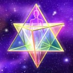

Éveil du champ quantique & activation de la Merkaba
Le corps de lumière cristallin constitue la Matrice individuelle préparatoire à l'intégration de la matrice 4D/5D collective qui s'installe sur la Terre. Comment s'adapter pour absorber les octaves de ces énergies sachant que le temps s'accélère et qu'un travail conscient est nécessaire ? Durant ce stage, méditations et géométrie sacrée associées au son provoquent l'ouverture de la conscience supérieure et le déploiement de la merkaba de l’Âme.

HUMAIN QUANTIQUE - VIBRATION CRISTALLINE ET MERKABA
ACTIVER SA MERKABA SOLAIRE ET CRISTALLINE POUR ABSORBER LES OCTAVES DES NOUVELLES ENERGIES
L'accélération de la descente d'énergie cosmique qui s'opère par vagues successives à travers les pluies de photons des vents solaires augmente la fréquence vibratoire de la planète qui bénéficie depuis les années 1980 d'une grille de protection énergétique extérieure en sus de la magnétosphère. Mais depuis quelques années la Terre s'attribue également une grille cristalline intérieure afin de s'harmoniser progressivement avec les nouvelles énergies de la galaxie. Durant la période dite de transition (4D), chaque organisme vivant doit s'adapter rapidement à ces nouvelles fréquences et se re-informer. L'homme doit reprogrammer ses « mémoires cellulaires » et se structurer. L'Etre devient vibratoire. Tout est son dans l'univers, tout est vibration et chaque Âme s'identifie par un son spécifique car unique.
Le microcosme est à l'image du macrocosme - Voir Rubrique Une Nouvelle Ère
Alors que le Corps de Lumière correspond à cette grille énergétique de protection et de transformation extérieure, le Corps de Lumière Cristallin constitue la Matrice individuelle Solaire et Cristalline nécessaire à l'intégration de la matrice 4D/5D collective qui s'installe sur la Terre.
Vidéo de Juin 2017

Créé en 2015 ce stage permet à partir de méditations et de géométrie sacrée associées au son (musique 432 hertz, sonorités de bols de cristal )- Déploiement des centres de conscience du corps de lumière (qui deviennent des capteurs énergétiques pour la Loi d'Attraction et expansion du champ quantique
- Libération karmique / Attraction des Âmes Sœurs et famille stellaire
- Construction du vaisseau Merkaba cristallin et mutation de l'ADN énergétique préparant la mutation physique à venir.
MODALITES PRATIQUES
Cadre de référence des Stages : Les Valeurs de respect et de sincérité sont posées en début de stage. La période actuelle favorise la multiplication des informations et propositions ; il est impératif de rester vigilant. Discernement et liberté doivent permettre à chacun de rester Maître de sa propre vie sous la guidance de son cœur.
- Dates : > Consulter les dates
- Lieu : DORDOGNE - 24580 PLAZAC - Castelgirou - Possibilité d'hébergement sur site.
- Durée : Stage de 3 jours - Du vendredi 9h au dimanche 17h
- Tarif : 300 euros - Si difficultés financières, ne pas hésiter à me contacter